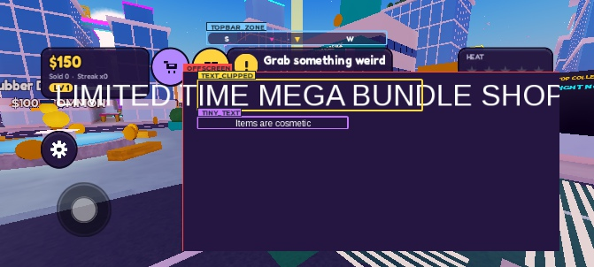
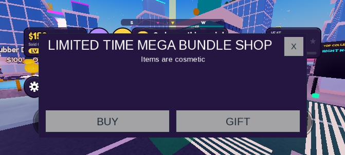

Mobile UI Audit
One click in Roblox Studio shows the UI problems your phone players hit: buttons too small to tap, text that is cut off, panels hiding under the top bar or past the screen edge.
Before and after (Galaxy A06, real game running)

[OFFSCREEN] ShopPanel · 620x360 at 200,40 [SMALL_TARGET] Close · 28x28 px [TARGET_OVERLAP] Buy · overlaps Gift [TEXT_CLIPPED] Title [TINY_TEXT] FinePrint · TextSize 9

[TOPBAR_ZONE] Compass · reaches 14 px into the top bar (deliberate, centre)Fix: Scale sizing with UISizeConstraint, a 44 px close button, buttons anchored side by side, TextScaled title.
Send one screen of your game and get its top 3 phone problems back within 48 h. No payment, no email.
Request a free phone checkWhat it checks
Visible elements that cross the screen edge or sit under the top bar.
Buttons smaller than 44 × 44 px, too small for thumbs.
Text that does not fit its box (TextFits = false).
Text under 11 px that phone players cannot read.
Two buttons covering each other, so taps hit the wrong one.
One button cycles the Device Simulator: small Android, iPhone, iPad, off.
How it works
- Press Next phone. The viewport becomes a Galaxy A06 (705 × 338), the smallest common phone.
- Press Audit. Every finding gets a red outline with its label, and the Output shows a list with the path of each element.
- Works in Edit (StarterGui) and in Play (your live PlayerGui, including UI created by scripts).
Read-only: it never changes your UI. Empty layout frames and Roblox's own touch controls are ignored, so you only see real problems.
Get your game checked
We run the audit on your game on three devices (small Android phone, iPhone, iPad) and send you the results.
All findings with element paths, a screenshot per device, a prioritised fix list.
The report, plus we fix the findings in a copy of your place (Scale, UISizeConstraint, TextScaled, larger touch targets) and send it back.
Opens a GitHub issue. We reply within 24 h with the delivery date and payment details. You pay only after we confirm.
Plugin price
One-time purchase, coming to the Roblox Creator Store. Not on sale yet.
I want it: tell me when it is liveThe button opens a GitHub thread. A 👍 or a comment tells us you want it. No payment and no email is collected here.